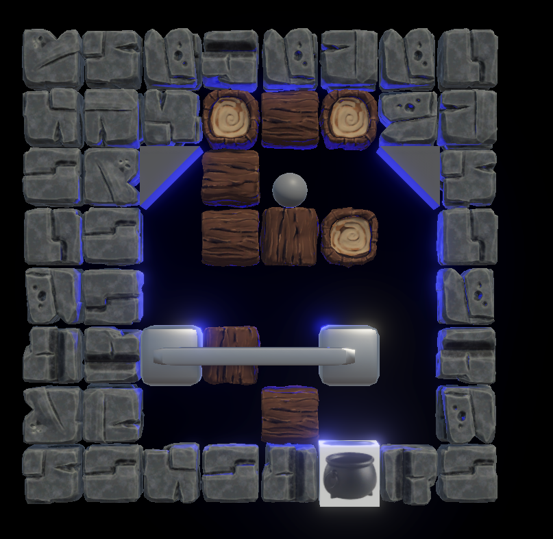

I'm currently working on a halloween themed puzzle game called "Trickstir" for my
MI 445 Game Design and Development class. It involves rotating a grid of squares
clockwise in turns to roll ingredients into a witch's cauldron. It's simple, but
intuitive, fun, and addictive.
One of the core features of the game that I helped implement was an undo mechanic!
It's super cool, and let's you undo any changes you've done in the game and has a
(work-in-progress) animation that adds some flair!

The game is already extremely functional, but it'll be done by the end of this month
and hopefully I can share it then!
Good Topology
Vivek Kilari |
I'm a game programmer but alongside my programming abilities, I've been growing as
an artist over the years. I have practiced 2D art casually for many years now, but
this past Summer and this semester I've started learning the skill of 3D art.
There are a lot of difficult lessons and skills to learn in 3D modelling, but one
of the more interesting things to wrap your head around is the idea of toplogoy, and
more specifically having "good" topology.
Toplogy generally, is a field of Mathematics concerned with geometric objects and
things related to them. While 3D modelling deals with virtual objects, it does not
mean we can simply create whatever we want without worry. Building models certain ways
helps to do certain things with them in a different part or stage of a digital production
pipeline. To draw an analogy, some could make a really giant website with raw HTML,
CSS, and JS theoretically, but the larger it gets, considering the limitations of the
technologies stop you from being as flexible as you could be in creating more content
or reworking the website.
Regarding what good topology is, it can be a pretty varied affair. But in the
case of video games, where performance, as in efficiency and capability, are very
important, so a good rule of thumb is to minimize the amount of individual polygons
in a mesh to the least you need for your specific use case.
Additionally, it can be good to have flexible, animatable geometry, so it is important
to prioritize workflows that make sure most if not all polygons in a mesh are quads,
as in they only have 4 vertices, and to make sure that there is good edge flow through
those quads, which will allow for better deformation of important areas of a mesh.
Feature of Topology
Benefit of Feature
Low Polygon Count
The lower the polygon count for a mesh in engine, the less computation
is required to effectively render that mesh, thus increasing performance.
Quads and Good Edge Flow
Having a mesh that has good quads and edge flow will allow for more flexible
modelling, alongside increase animation capability.